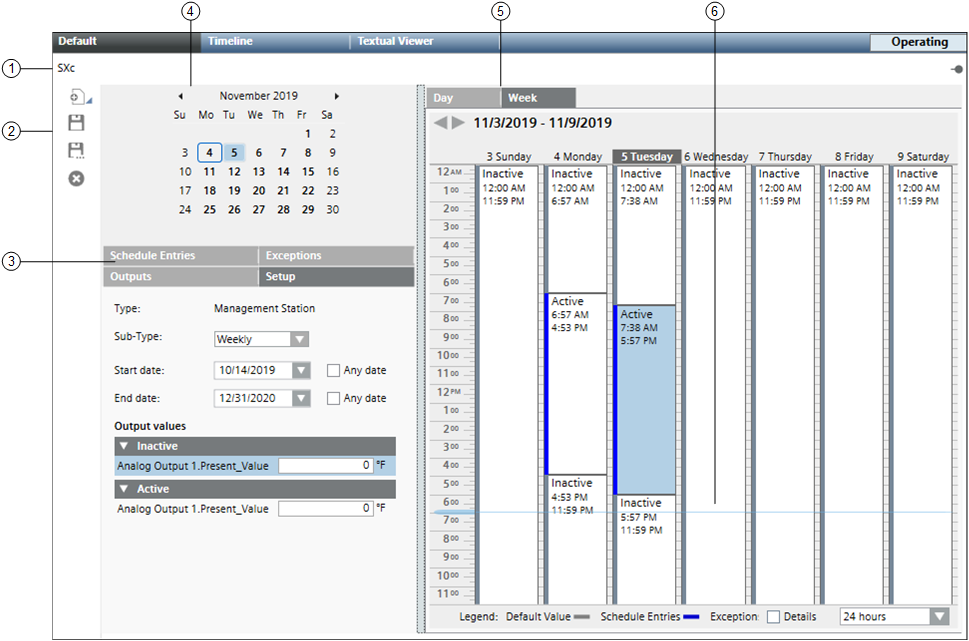

Management Station Schedule Workspace
This section provides an overview of the Management Station Schedule Workspace.

| Name | Description |
1 | Schedule Name | Displays the name of the schedule. |
2 | Scheduler Toolbar | Includes the following icons: |
3 | Tabs | Displays four tabs: Schedule Entries, Outputs, Exceptions, and Setup. Schedule Entries: Displays a list of entries for the selected date and Output values. The Output values indicate the ON and OFF values for Daily schedules only. For weekly schedules the Output values are present in the Setup tab. Outputs: Outputs are objects associated with the schedule. You can drag objects to any tab to add them to the schedule. Dropping them on a tab other than the Outputs tab makes the Outputs tab active. Selecting an object in this section sends data about the object to the Operation/Extended Operation tabs, where you can view additional information about the object and make changes to it. Double-clicking an output makes it the new primary selection. Exceptions: Displays a list of exceptions for the selected date and allows you to set the exception period, including a recurrence pattern. For calendar exceptions, you can choose a calendar object from a drop-down list. This tab also displays schedule entries and ON and OFF values. Adding an exception makes the Exceptions tab active. You can create an exception by right-clicking the schedule or by clicking the New button in the Exceptions tab. Setup: Allows you to specify the type of schedule (Weekly or Daily) that you want to create. You can specify the type of schedule by selecting either Weekly or Daily from the Sub-Type drop down list. You can also specify the start date and end date for the schedule from the Setup tab. The Any date check box next to the Start date defaults to the current date, whereas the Any date check box next to End date, defaults to an infinite date. |
4 | Date Picker | Allows you to select a day to view or create schedule entries. When first displayed or refreshed, the current day is selected by default. By default, every new schedule begins with the current date and never ends. Once a new schedule is opened, you can choose the start and end date for the schedule. |
5 | Schedule | When first displayed or refreshed, the current day is selected by default. Day Tab: Shows a schedule for the day selected in the Date Picker. Selecting the Detail check box reveals calendar entries, weekly schedule entries, and exception schedule entries. The Day tab also displays a horizontal time bar indicating the current time. NOTE: You can schedule entries from the weekly view, however, the weekly view shows only the resulting schedule and not the details of the schedule. For more flexibility in visualizing and creating schedule entries, you can use the Schedule Entries tab. |
6 | Current Time Indicator | Displays a light-blue bar corresponding to the time of day. |